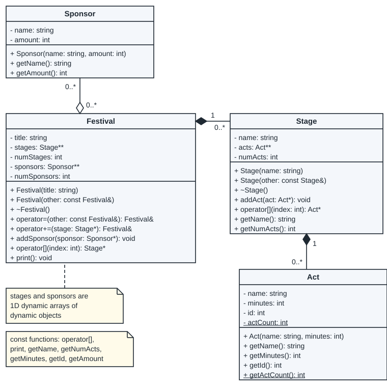
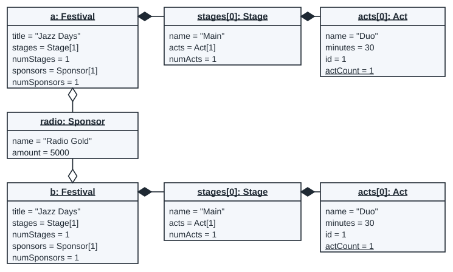
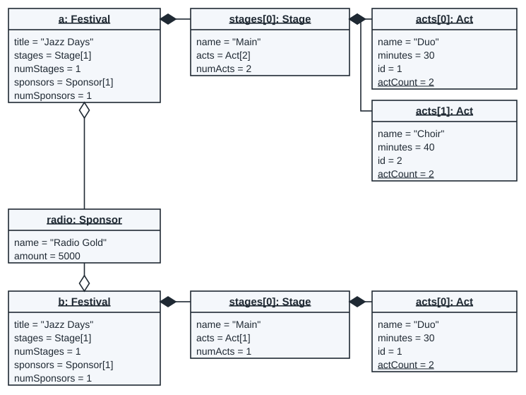
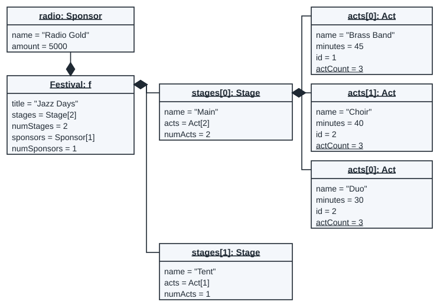
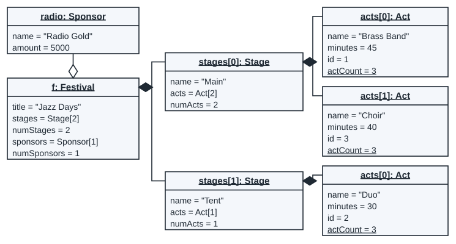
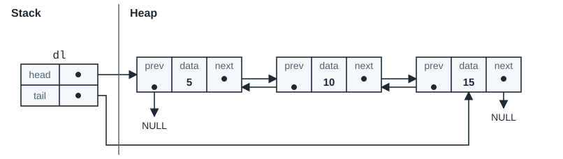
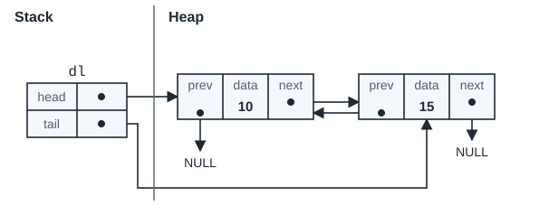

Worked questions in the test forms
Each question below has the form of a 2026 test question: a flowchart drawn from a class diagram, with no code given (Class Test 2A, Semester Test 1), every object after a line (Semester Test 1), finding the errors in a diagram, and a memory diagram. The real test questions, word for word, are under From past papers on the Practice page.
Assumed
The Festival, School, Recipe and Logger programs are made up for practice. Only the question forms come from the tests.
Example 1: the assignment operator as a flowchart
flowchart from a class diagram
Draw the flowchart of the Festival assignment operator, operator=(other: const Festival&): Festival&. No code is given: use the class diagram and the description.

A festival owns its stages (filled diamond): it makes each Stage and deletes it. It only stores pointers to its sponsors (hollow diamond): the Sponsor objects are made in main. numStages and numSponsors are the sizes of the two arrays. After a = b, festival a must have its own copy of every stage of b, the same sponsors as b, and no leaked memory.
Write this before you open the solution.
![Flowchart of operator=(const Festival& other). Decision: Is other the same object as this festival? Yes goes down the right side to return a reference to this festival. No: predefined process free the old memory, as the destructor does; copy title and numStages from other; allocate a new stages array of size numStages; set i to 0; loop Is i less than numStages? Yes: make a new Stage that copies other's Stage at index i, and store it at index i; add 1 to i; back. No: copy numSponsors from other; allocate a new sponsors array of size numSponsors; set i to 0; loop Is i less than numSponsors? Yes: store other's sponsor pointer at index i (the same Sponsor object); add 1 to i; back. No: return a reference to this festival; END.](assets/diagrams/fest_assign_m.svg)
| Condition | True means | False means |
|---|---|---|
this == &other | a = a: nothing to copy, return at once | copy other into this festival |
i < numStages | stage i still needs a new copy | all stages copied: go on to the sponsors |
i < numSponsors | sponsor pointer i still needs copying | all copied: return |
Take two festivals: a has one stage (Main, with one act) and one sponsor; b has one other stage. An instrumented copy of the operator ran b = a and then a = a. Each row counts the passes through the two loops:
| Assignment | Same object? | Stage loop passes | Sponsor loop passes | Path |
|---|---|---|---|---|
b = a | No | 1 | 1 | every shape of the chart |
a = a | Yes | 0 | 0 | start, the first diamond (Yes), return, END |
The passes of b = a, one by one:
| Loop | i | Is i less than the size (1)? | What happens |
|---|---|---|---|
| stages | 0 | Yes | make a new Stage that copies a.stages[0] ("Main", with 1 act); store it in b.stages[0] |
| stages | 1 | No | leave the loop |
| sponsors | 0 | Yes | store the pointer a.sponsors[0] in b.sponsors[0]: both point at radio |
| sponsors | 1 | No | leave the loop |
Check your chart against the code. Each shape is one step of it:
Festival& Festival::operator=(const Festival& other) {
if (this == &other)
return *this;
for (int i = 0; i < numStages; i++)
delete stages[i];
delete[] stages;
delete[] sponsors;
title = other.title;
numStages = other.numStages;
stages = new Stage*[numStages];
for (int i = 0; i < numStages; i++)
stages[i] = new Stage(*other.stages[i]);
numSponsors = other.numSponsors;
sponsors = new Sponsor*[numSponsors];
for (int i = 0; i < numSponsors; i++)
sponsors[i] = other.sponsors[i];
return *this;
}Example 2: every object after b = a
every object after a line
Draw the object diagram of every object that exists after line 8. Then say what changes after line 9.
#include <iostream>
#include "Festival.h"
using namespace std;
int main() {
Sponsor radio("Radio Gold", 5000); // line 1
Festival a("Jazz Days"); // line 2
a += new Stage("Main"); // line 3
a[0]->addAct(new Act("Duo", 30)); // line 4
a.addSponsor(&radio); // line 5
Festival b("Folk Night"); // line 6
b += new Stage("Barn"); // line 7
b = a; // line 8
a[0]->addAct(new Act("Choir", 40)); // line 9
cout << "Act count: " << Act::getActCount() << endl; // line 10
a.print(); // line 11
b.print(); // line 12
return 0;
}Write this before you open the solution.

Line 8 deletes b's old stage "Barn" and copies a: b gets a new Stage "Main" and a new Act "Duo". The new Act is made by the copy constructor that C++ writes when a class declares none (Act.h declares none): it copies each member, so the copy has the id 1, and actCount does not go up. The sponsor is not copied: both festivals point at radio.

The output confirms it: a has two acts, b has one.
Act count: 2 Festival Jazz Days, stages: 1, sponsors: 1 Stage Main at index 0/1, acts: 2 Act at index 0: Duo (ID=1, 30 min) Act at index 1: Choir (ID=2, 40 min) Sponsor at index 0/1: Radio Gold (5000) Festival Jazz Days, stages: 1, sponsors: 1 Stage Main at index 0/1, acts: 1 Act at index 0: Duo (ID=1, 30 min) Sponsor at index 0/1: Radio Gold (5000)
Example 3: find the errors
read an object diagram
The Festival classes are the ones in the class diagram of Example 1. Each Act gets an id from the static actCount, which goes up by 1 each time the Act constructor runs. This is the program:
#include <iostream>
#include "Festival.h"
using namespace std;
int main() {
Sponsor radio("Radio Gold", 5000); // line 1
Festival f("Jazz Days"); // line 2
f += new Stage("Main"); // line 3
f += new Stage("Tent"); // line 4
f[0]->addAct(new Act("Brass Band", 45)); // line 5
f[1]->addAct(new Act("Duo", 30)); // line 6
f[0]->addAct(new Act("Choir", 40)); // line 7
f.addSponsor(&radio); // line 8
cout << "Act count: " << Act::getActCount() << endl; // line 9
f.print(); // line 10
return 0;
}This object diagram was drawn for the program after line 8. It has four errors. Find them.

Write this before you open the solution.
- The name section is
Festival: f. It must bef: Festival: object name first, then the class. - Choir has
id = 2. Choir was made third (line 7), after Duo (line 6), so its id is 3. - Duo is joined to
stages[0](Main). Line 6 adds Duo tof[1], the Tent stage. radiois joined with a filled diamond. The festival does not own the sponsor (it was made in main and is never deleted by the festival), so the diamond is hollow.

The output agrees with it:
Act count: 3 Festival Jazz Days, stages: 2, sponsors: 1 Stage Main at index 0/2, acts: 2 Act at index 0: Brass Band (ID=1, 45 min) Act at index 1: Choir (ID=3, 40 min) Stage Tent at index 1/2, acts: 1 Act at index 0: Duo (ID=2, 30 min) Sponsor at index 0/1: Radio Gold (5000)
Example 4: a memory diagram after removeFront
memory diagram · linked lists
A doubly linked list has head and tail, and each node has a prev pointer back to the node before it as well as next.
class DNode {
private:
int data;
DNode* next;
DNode* prev;
public:
DNode(int data);
int& getData();
DNode*& getNext();
DNode*& getPrev();
};#include "DLL.h"
int main() {
DLL dl; // line 1
for (int i = 1; i <= 3; i++) // line 2
dl += i * 5; // line 3
dl.print(); // line 4
dl.printBackwards(); // line 5
dl.removeFront(); // line 6
dl.print(); // line 7
return 0;
}
Line 6 calls dl.removeFront(). Draw the memory diagram after line 6.
void DLL::removeFront() {
if (head == NULL)
return;
DNode* temp = head;
head = head->getNext();
if (head == NULL)
tail = NULL;
else
head->getPrev() = NULL;
delete temp;
}Write this before you open the solution.
| Condition | True means | False means |
|---|---|---|
head == NULL | the list is empty: nothing to remove | remove the first node |
head == NULL | (after head moved on) the list is now empty: tail must be NULL too | the new first node gets prev = NULL |

The first if tests the old head; the second tests the new head, after head = head->getNext();. Here the new head is node 10, so its prev is set to NULL. Line 7 prints:
10 15